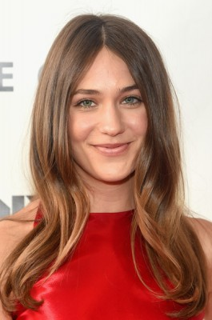
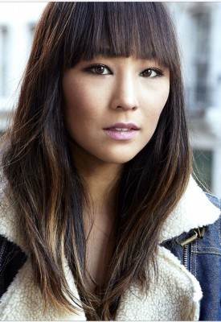
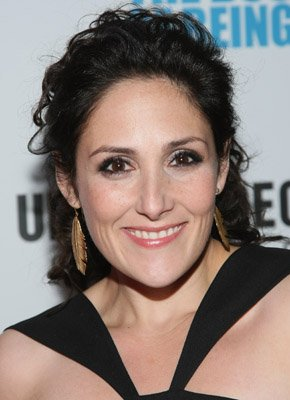
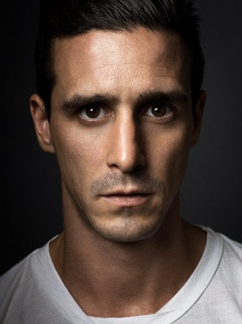
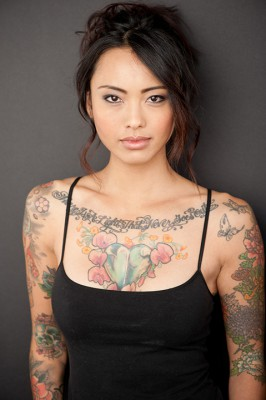

#10065 Gemini

 IMDB-Wertung: 5.5 / 10
IMDB-Wertung: 5.5 / 10  Metascore: 71
Metascore: 71 
Als persönliche Assistentin von Heather Anderson (Zoë Kravitz), einer jungen Schauspielerin in Los Angeles, versucht Jill LeBeau (Lola Kirke) ihrer aufstrebenden Klientin jeden Wunsch von den Lippen abzulesen: Das Meeting mit dem cholerischen Regisseur übernehmen, die Paparazzi abwimmeln und auch mitten in der Nacht ist Jill immer für Wünsche da. Eines Morgens wird sie jedoch mit einer Situation konfrontiert, die sie so nicht vorhergesehen hat. Heather liegt in einer riesigen Blutlache im Flur ihres Hauses, tot, erschossen mit der Waffe von Jill. Auf der Suche nach der Wahrheit stößt sie im glamourösen Hollywood schließlich auf einige schmutzige Details aus Heathers Vergangenheit.
Jahr: 2017
Dauer: 93 Minuten
FSK: 12
Land: USA Studio: NeonTonspuren: DD5.1 - ,
Untertitel:
Auflösung: 1080p (1920x800) Größe: 6973 MB
Genre: Thriller, Drama, Krimi, Mystery
Regisseur: Aaron Katz
Drehbuch: Aaron Katz
Soundtrack: Keegan DeWitt
Darsteller:
-  Lola Kirke als Jill LeBeau
- Zoë Kravitz als Heather Anderson
 John Cho als Detective Edward Ahn
John Cho als Detective Edward Ahn-  Greta Lee als Tracy
-  Ricki Lake als Vanessa
- Michelle Forbes als Jamie
- Nelson Franklin als Greg
- Reeve Carney als Devin
- Jessica Parker Kennedy als Sierra
-  James Ransone als Stan
 Todd Louiso als Keith
Todd Louiso als Keith- Marianne Rendón als Cassandra
- Abraham Lim als Seo-Jin
- Gabriela Flores als Andrea
- Ted Stavros als Teenage Waiter
-  Levy Tran als Thiri
- Naby Dakhli als Production Assistant
- Ray Reynaga als Paparazzo #1
- Chad Hartigan als Paparazzo #2
- Juan Antonio als Officer Santos
- Jamel Baines als Police Officer
- Ginger Horne als Bar Patron
- Gary Karapetyan als Bar Patron
- Steve Koss als Bar Patron
- Emily Pearse als Waitress
- Michael Joseph Pierce als Studio Executive
- Chris Pinto als Bar Patron
- Nancy Pinto als Bar Patron
- Taylor Clemenza als Restaurant Patron
- Kennedy Collier als Police Technician
- Khalid Dualeh als Police Officer
- Stephanie McVay als Maxine
Datei: X:\2017(G-M)\Gemini (2017, FSK12, 1920x800).mkv seit 26.11.2018
Festplatte: HD 2017(A-Z)-2018(A-F)
 Es gibt insgesamt 148 Filme in der Gruppe '2017(G-M)'
Es gibt insgesamt 148 Filme in der Gruppe '2017(G-M)'